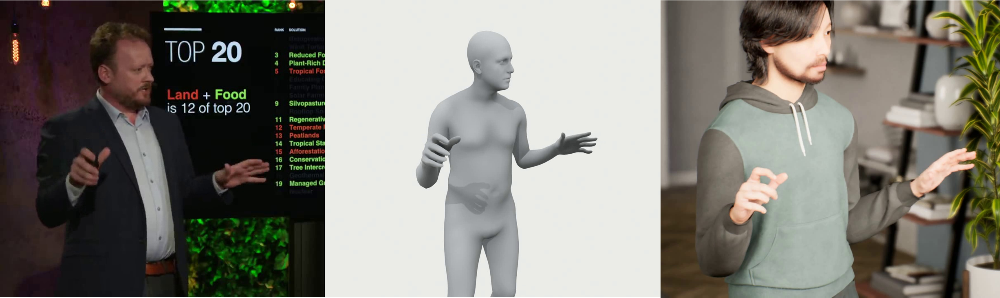

3d ARGA:
3d Avartar Ready Gesture Animations
Andrew Feng, Samuel Shin, Youngwoo Yoon
IVA 2022

3d ARGA is 3d Avatar-Ready Gesture Animations from Monocular Videos
Abstract
Modeling and generating realistic human gesture animations from speech audios has great impacts on creating a believable virtual human that can interact with human users and mimic real-world face-to-face communications. Large-scale datasets are essential in data-driven research, but creating multi-modal gesture datasets with 3D gesture motions and corresponding speech audios is either expensive to create via traditional workflow such as mocap, or producing subpar results via pose estimations from in-the-wild videos. As a result of such limitations, existing gesture datasets either suffer from shorter duration or lower animation quality, making them less ideal for training gesture synthesis models. Motivated by the key limitations from previous datasets and recent progress in human mesh recovery (HMR), we developed a tool for extracting avatar-ready gesture motions from monocular videos with improved animation quality. The tool utilizes a variational autoencoder (VAE) to refine raw gesture motions. The resulting gestures are in a unified pose representation that includes both body and finger motions and can be readily applied to a virtual avatar via online motion retargeting. We validated the proposed tool on existing datasets and created the refined dataset TED-SMPLX by re-processing videos from the original TED dataset. The new dataset will be made available for future research. Samples showing the extracted gesture motion can be found in the video link at https://youtu.be/nmef_FUavzU.
Video
Download
We provide the body model parameters corresponding to each motion capture sequence in the included datasets, along with tutorial code to visualize the data and basic tools to use it in deep learning tasks.
You can request download here.
Referencing the 3d ARGA Dataset
@conference{3d ARGA:IVA:2022,
title = {{3d ARGA}: A Tool for Extracting 3D Avatar-Ready Gesture Animations from Monocular Videos},
author = {Andrew Feng, Samuel Shin, Youngwoo Yoon},
booktitle = {the Name of Booktitle},
pages = {0000--0000},
month = may,
year = {2022},
month_numeric = {00}
}
To cite our dataset, please download this bib file. For your reference, you can cite them all as
\include{3d arga.bib}
...
\cite{….}
Contribute to 3d ARGA
The research community needs more human motion data. If you have interesting motion capture data, and you are willing to share it for research purposes. To contribute, please contact feng@ict.usc.edu
Contact
Hosted and created by Vision & Graphics Lab, part of the USC Institute for Creative Technologies.